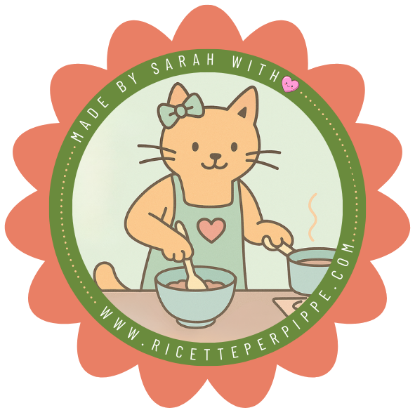

Clueless Cooks
A personal recipe blog with a chip on its shoulder — and a case study in treating dinner like documentation. The payoff says it all: if it’s listed, it’s tasted.

Taste the blog
Open ricetteperpippe.com (Clueless Cooks website) ↗Two universes of analysis
Same blog, two ways to read it. Pick your lens. ↓
One blog, three names — all of them rude about my cooking
IT
Ricette per Pippe
Affectionate Italian slang for people who are hopeless at the stove.
EN
Clueless Cooks
The English version that politely admits we have no idea what we’re doing.
FR
Recettes pour quiches
In French, une quiche is both a tart and a hopeless beginner. Couldn’t resist.
Right now the three languages are really just for friends — I have Italian-, French- and English-speaking ones, and it was nice to drop them the blog whenever a recipe came up in conversation. But the same joke landing in every language is also exactly the consistency a brand needs later: the voice is already locked.
The user persona was, embarrassingly, me
Every design decision here traces back to a real moment of me standing in my kitchen, defeated.
The crème caramel incident
Halfway through an online recipe, I found out — hidden in the final notes — that I needed a specific little pan I didn’t own. I’d already started. So there I was: caramel setting, dignity melting, and seven hours of failures later.
The endless scroll
I hated scrolling back up to the ingredients at every single step — then scrolling down and completely losing which step I was on. Hands dirty, place lost, soup over-salted.
So I did the only reasonable thing: I treated the recipe like a piece of technical documentation. Because a recipe is the oldest form of technical writing there is — a sequence of steps, with prerequisites, that has to produce the same result in anyone’s kitchen.
Nine years of technical communication, pointed squarely at dinner.
Four decisions, four frustrations solved
01
Everything you need, before you start
A Quick Info box up top — servings, prep, cook, and tools — so the special pan never ambushes you on step seven. No prerequisite hides in the footnotes.
02
Color as a language
Inside each step, orange marks ingredients & amounts and green marks technique & warnings. The quantity lives in the step, so you stop scrolling up.
03
A live, tap-to-check list
Every step has a checkbox. One messy-thumbed tap marks it done, so you never lose your place again. The page becomes a checklist that survives interruptions.
04
Know where you are
Category pills sit at the top of every recipe, the active one filled in. Arrive from Google, see exactly where you landed, and step sideways into similar recipes without going back.
Why orange & green
A recipe step holds two kinds of information — what goes in and how you handle it. Two meanings, two colors. Learn the code once and you stop re-reading: it’s syntax highlighting for cooking, where color is a category, never decoration.
Ingredients, amounts and the tools you need up front. Warm, like cooked food — it reads as stuff you touch.
Technique and warnings. Green is the universal go / careful signal — it reads as what to do, and what not to.
The code, in one step
Add 160 g Carnaroli rice to the dry pan and toast for 2 minutes. Never let it dry out completely — it’ll catch and turn bitter.
Discipline. On a calm cream canvas, only two accents carry meaning. No third “pretty” color to dilute the code — every hue is a token, and tokens cost attention.
On brand. Both are lifted straight from the apron-cat badge — coral-orange and sage-green — so reading a recipe and recognizing the blog run on one palette.
Type, and why
Three roles, three voices: a face that signs the brand, a face you actually read, and a face that disappears. The personality lives in the headings — everything else gets progressively quieter so the recipe stays legible.
--font-heading
Clueless Cooks
Pacifico
Playful, handmade, a personal signature — the right tone for a recipe blog that refuses to take itself seriously.
--font-body
If it’s listed, it’s tasted.
Fraunces
Warmth and an editorial feel — a soft modern serif, more characterful than a classic one but still easy to read through long steps.
--font-small
PREP 10’ · COOK 20’ · SERVES 2
Helvetica Neue
Neutral and clean for labels, timings and technical details — it steps back so the character stays in the headings and body.
The bones are in — the polish isn’t, yet
Live, but a work in progress
The blog is up and the automations are wired end-to-end — but the structure and pipelines are scaffolded, not finished. The design is where I keep iterating, and I’ve got a running list of things to push further.
Top of my fix-list: the images
Right now a photo lands mid-instruction and splits a step in two — exactly the cognitive overload the layout was built to kill. I want imagery to support a step without interrupting it: a quieter rail beside the text, or grouped at natural pauses — never mid-sentence.
From personal blog to actual brand
Right now it’s just my blog, shared with friends. But if it takes off, the brand is ready to step out on its own: I’ve planned redirects onto dedicated domains — likely recettespourquiches.fr and cluelesscooksrecipes.com — alongside automated content pipelines that draft recipes in the house tone and post them across socials, turning clueless cooks into a community.
Get in touch
Let’s talk.
Got a project, a role, or just want to swap kitty pictures and plant-based recipes? I’d love to hear from you.